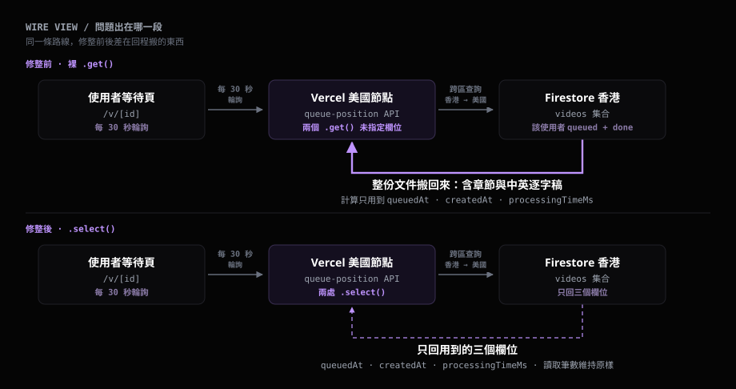
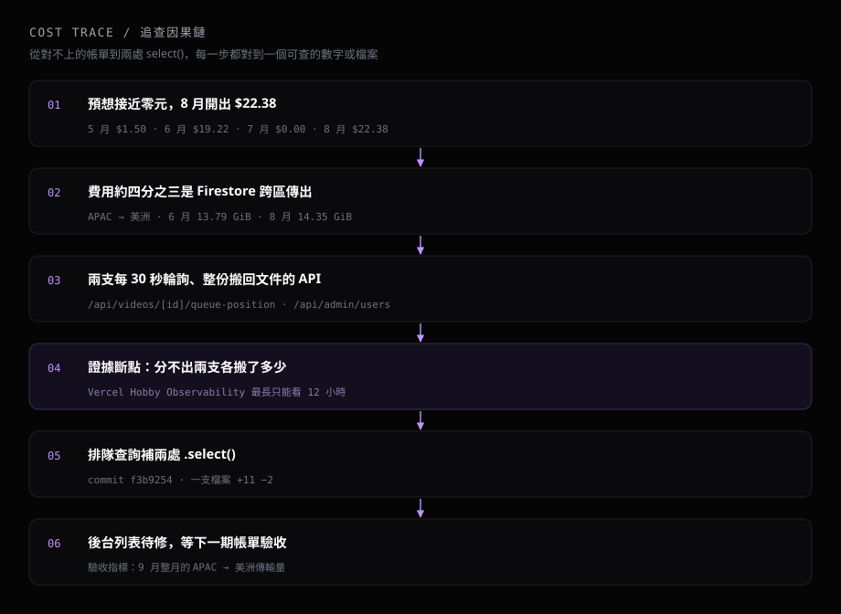

yt-digest 是我維護的一個線上服務：使用者丟一支 YouTube 影片進來，它產一份摘要報告。影片處理的重活跑在本機 daemon，雲端放的是 Next.js 前端、Firestore、Cloud Storage 和幾支 API，我預想它的雲端月費接近零元。Google Cloud 的帳單報表寫著：6 月 $19.22，8 月 $22.38，7 月 $0.00。這篇記錄我怎麼從報表上的用量往回推，推到哪裡有證據，推到哪裡證據斷了。
# 預想是零元，報表寫著 $22.38
我把 3 月到 9 月的帳單報表匯出成 CSV，按月份和 SKU 分組。金額之外，我多看兩個用量：Firestore 傳到美洲的資料量，和讀取次數。Firestore 資料庫在 5 月 15 日建立，所以 5 月只有半個月的資料。
| 月份 | 金額 | 傳到美洲 | 讀取次數 |
|---|---|---|---|
| 5 月 | $1.50 | 7.52 GiB | 465,255 |
| 6 月 | $19.22 | 13.79 GiB | 755,628 |
| 7 月 | $0.00 | 1.91 GiB | 416,134 |
| 8 月 | $22.38 | 14.35 GiB | 712,176 |
收費的兩個月，傳到美洲的量都在 13 GiB 以上；7 月掉到 1.91 GiB，大約是 8 月的七分之一，帳單歸零。金額跟著傳輸量走，這是表上唯一能直接讀出來的關係。
# 這筆錢的名字叫資料傳輸
把 SKU 攤開，收費的項目只有兩個，其餘的寫入、刪除、儲存、Cloud Storage 全部是 $0.00：
| SKU | 6 月 | 8 月 |
|---|---|---|
| Cloud Firestore Internet Data Transfer Out from APAC to the Americas | $14.27 | $16.91 |
| Cloud Firestore Read Ops Hong Kong | $4.95 | $5.47 |
跨區傳輸在 6 月占 74.2%，8 月占 75.6%，剩下的是讀取次數。兩項的「服務」欄寫的都是 App Engine，Firestore 只出現在 SKU 名稱裡，只看服務分組的話會找錯地方。
這條傳輸路線來自架構。Firestore 資料庫的位置是香港（asia-east2）；API 跑在 Vercel，回應標頭 X-Vercel-Id 顯示執行的節點是 iad1，在美國東岸。Firebase 的計費文件寫明，Google Cloud 跨區的請求要另外收網路傳出費。
於是問題收斂成一句話：哪些 API 會從美國反覆去香港撈大量資料？

# 程式碼裡有兩支每 30 秒輪詢的 API
在 repo 裡搜 setInterval，每 30 秒呼叫 API 的地方有四處。其中兩處打的是 /api/daemon-status，每次只讀 system/daemon 一份文件；另外兩支會撈出整批文件，並用 .get() 整份搬回來，兩支都跑在 Vercel、都去查香港的 Firestore。
第一支是等待頁的排隊查詢。使用者送出影片後停在 /v/[id]，頁面用 setInterval(fetchPos, 30_000) 呼叫 /api/videos/[id]/queue-position，只在影片狀態是 queued 時輪詢。每次呼叫對這個使用者的 users/{uid}/videos 讀三次：
- 讀目標影片本身，拿它的排隊時間。
- 撈出所有
status == "queued"的影片，算排在前面的有幾支。 - 撈出所有
status == "done"的影片，按處理時間由大到小排序，取前 10 支算平均。
計算用到的欄位只有 queuedAt、createdAt、processingTimeMs。影片文件裡另外存著章節、原文逐字稿和中文逐字稿，這些欄位每 30 秒跟著跨區一次；使用者完成的影片越多，第三個查詢搬的量越大。
第二支是後台的使用者列表。/admin 頁用 setInterval(loadAll, 30000) 呼叫 /api/admin/users。這支 API 先讀出所有使用者，再對每一個使用者撈 done 和 failed 的影片，同樣是整份 .get()。它的輪詢條件只有一個：後台分頁開著。

# 證據斷在哪裡
兩支 API 都符合「每 30 秒從美國去香港撈整份文件」，但 6 月和 8 月的 14 GiB 各自由誰搬的，現在分不出來。
要分開它們，需要 6 月和 8 月每支 API 的呼叫次數。我去 Vercel 的 Observability 找，專案用的是 Hobby 方案，時間範圍最長只能選「Last 12 hours」，更長的範圍要升級才開放。兩個月前的呼叫紀錄已經不在了。
帳單報表裡還有一項對不上。Firestore 傳到 APAC 內部的流量，7 月 1.99 GiB，8 月 7.68 GiB，也漲了三倍多。這段流量的目的地在 APAC 內，跟 Vercel 美國那條路分屬兩項 SKU，兩支輪詢 API 都解釋不了；它也沒有收費，所以這篇不往下追。

# 先修掉排隊查詢
Firestore 的 .select() 讓查詢只回指定欄位。排隊查詢的兩個查詢各補一行，回應內容與計算邏輯保持原樣：
const queuedSnap = await videosCol
.where("status", "==", "queued")
.select("queuedAt", "createdAt")
.get();
const doneSnap = await videosCol
.where("status", "==", "done")
.select("processingTimeMs")
.get();
改動是 commit f3b9254，一支檔案，11 行新增、2 行刪除，兩處都留了註解說明拿掉 .select() 的代價。GitHub 上這個 commit 的 Vercel 部署狀態是 success，時間 2026-09-05。第一次讀目標影片的那一行仍是整份讀取，只有一份文件，這次沒動。
這次修的是傳輸量，讀取次數沒動。Firebase 的計費文件寫的是「為了滿足查詢而讀取的文件」都要計費，.select() 減少的是每份文件搬回來的欄位，讀了幾份文件維持原樣。
後台的 /api/admin/users 到 2026-09-13 為止還是整份 .get()，是下一個要補 .select() 的地方。
# 驗收要等下一期帳單
9 月到 13 號為止，報表上沒有「APAC 到美洲」這一項。這段期間包含修正上線前的 9 月 1 日到 5 日，所以它證明不了修正有效。驗收的指標是整個 9 月、以及後台列表修掉之後那個月的跨區傳輸量。
# 輪詢端點要自己留紀錄
輪詢 API 的花費由三個數字相乘：單次搬多少資料、多久呼叫一次、同時開著幾個分頁。前兩個寫在程式碼裡，第三個由使用者決定。這次兩支 API 在畫面上都只負責幾個數字，搬回來的卻是整份文件。
查法上留下的是時間差。帳單按月出，平台的呼叫紀錄在 Hobby 方案只留 12 小時，等看到帳單，能分辨元兇的資料早就沒了。往後寫任何會被輪詢的端點，我會先把這三個數字寫下來，並在自己的日誌裡按路由記呼叫次數，下次帳單對不上時才有東西可以對。
# 技術環境
Next.js App Router 部署在 Vercel（函式節點 iad1），資料庫是 Firebase Firestore（asia-east2），檔案放 Cloud Storage，影片處理交給本機 daemon。這次的改動範圍是 src/app/api/videos/[id]/queue-position/route.ts 一支檔案。
來源（皆於 2026-09-13 查證）：金額、SKU、傳輸量、讀取次數取自 Google Cloud 帳單報表「Firebase 付款」帳戶匯出的 CSV（2026-03-01 至 2026-09-30，按月份與 SKU 分組）；資料庫位置與建立日期取自 firebase firestore:databases:get；Vercel 節點取自線上回應標頭 X-Vercel-Id；Observability 時間範圍取自 Vercel 專案後台；輪詢與查詢取自 src/app/v/[id]/page.tsx、src/app/admin/page.tsx、src/app/api/videos/[id]/queue-position/route.ts、src/app/api/admin/users/route.ts、src/lib/types.ts；commit 與部署狀態取自 GitHub GHOST8787/yt-digest；讀取計費與跨區傳出費取自 Firebase 計費文件。